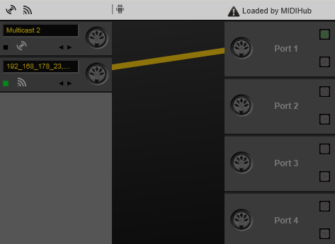

Select your computer's OS (macOS/Windows) and then continue at "After connecting"
The first thing you will need to make sure is that both your smartphone and your computer/laptop are in the same network.
Example: Your phone is connected to your router via WiFi(WLAN) and your PC/Mac is connected to your router via LAN or WiFi(WLAN).
After launching the app on your phone, select your OS (Windows or macOS) below.
Step 0:
You need to download and install an additional driver available at
humatic.de
The download link is located below "Downloads" in the 5th line.
Step 1:
After installing MIDIHub, launch it. Check whether your phone's showing is on the left. If not, reboot your PC.
Step 2:
Check if another application is already accessing MIDIHub. If the upper-right text says "Loaded by MIDIHub" or the application
you wanna use it with, you can continue with Step 3. If it mentions any other software hit the triangular
exclamation point warning sign thingy right next to it and add the .exe you don't want as an exception. You might have
to repeat this until you get "Loaded by MIDIHub" or Traktor, Ableton, Maschine, ...
Step 3:
Drag and drop a virtual cable from the port symbol on the tile of the phone to "Port 1" on the right.
Remember the port name you picked and close the software.

Proceed with "After connecting" down below.
Step 0:
You need to download and install an additional driver available at
humatic.de
The download link is located below "Downloads" in the 5th line.
Step 1:
Activate USB Debugging on your phone. It's hidden somewhere in the settings so check your phone's manual or google.
Then, connect your phone and your computer via USB cable.
Step 2:
Launch MIDIHub, the software that you just installed.
Check if another application is already accessing MIDIHub. If the upper-right text says "Loaded by MIDIHub" or the application
you wanna use it with, you can continue with Step 3. If it mentions any other software hit the triangular
exclamation point warning sign thingy right next to it and add the .exe you don't want as an exception. You might have
to repeat this until you get "Loaded by MIDIHub" or Traktor, Ableton, Maschine, ...
Step 3:
In Kontrol, hold "SHFT" and then click "Info". Click the text starting with "USB".
When the phone tells you to, click the Android () icon in MIDIHub. Your phone should appear
on the left.
Drag and drop a virtual cable from the port symbol on the tile of the phone to "Port 1" on the right.
Remember the port name you picked and close the software.
Proceed with "After connecting" down below.